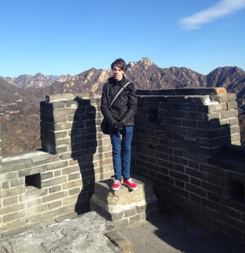
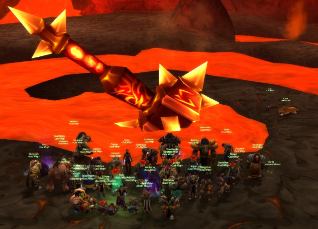

Traveller, Programmer, Gamer,
Meet Blade, a passionate traveller, programmer,
and gamer who has combined his love for technology
with his love for adventure. Blade was born and raised
in a Australia moving from around with
his parents,
during this time he developed an early fascination
with computers and technology.
He spent hours
tinkering with computers, learning how to code and
exploring the vast universes
that gaming had to offer
at the time.
Great Wall of China, 2014

After graduating highschool and completing his first
year of University, Blade decided to follow his
dream of
travelling the world. He started out by securing a work
placement with a company in
Chengdu, China.
Immersing himself in different cultures and exploring
new cities. Along the way,
he continued to work as a
Graphic Designer and started learning mandarin during
his stay.
As Blade travelled, he was always able to stay
connected to friends and family through
gaming.
He loved the way games could
transport him to different worlds and challenge
him to solve
complex problems. He began to
integrate gaming into his travels, seeking
out local gaming
communities and participating
in online competitions.
World of Warcraft Classic, 2019

Today Blade is currently in pursuit of becoming a
successful digital nomad, with goals to move overseas
again travelling the world with his laptop and exploring
new destinations while continuing to code
and game. He
has worked on projects for clients all over the world, and
has built a reputation as
a skilled programmer. When he's
not working or gaming, you can find him planning for his
next
getaway.